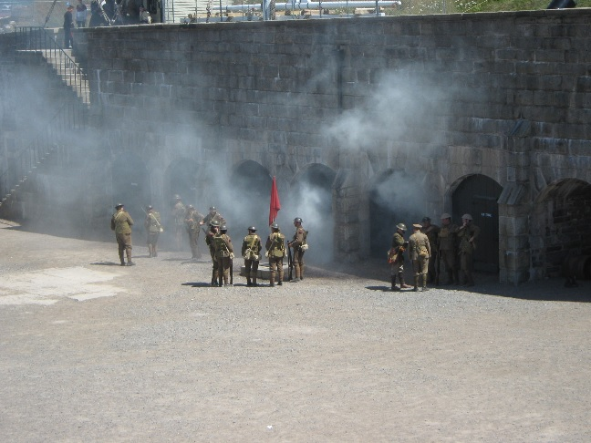

I remember growing up and visiting our national parks. It was always a way to escape and explore the world around us. Having the opportunity to work for an organisation that also loves the outdoors was ton of fun, and a
great way to have fun while working an exteemly interesting job. I worked for Parks Canada during the summers and some of the fall seasons of 2016 to 2021. Let me show you a small sample of my work expereince with my time at Parks Canada.
My Experience
These took place within mainland Nova Scotia. Over these six years, I got to be a part of some of the coolest exhibits in Canada!
Pictured here is my collegue Jacob and I, standing guard for a cerimonial day at the Halifax Citadel. Our role was to be the some of the first contact points for visitors to the site. This was in addition to what I thought
was the coolest part of the job! We often did special events to put on large shows for the public. Many of our guests were suprised to learn that many of our uniform pieces were authentic or a very close reproduction.
For example the Lee Enfeild rifles you see us holding are completely functional. We would put on shows everyday showing the public how they worked along side of the other older late 1800's rifles we used on site. Shooting
blank ammunition for the public was a thrill for everyone involved.
The main exhibit that I was proud to be a part of was the WW1 Trench exhibit that unfortunately concluded in 2018. This was a massive multi year project to try and bring as close of a "real" trench experince as one would want,
all contained within the walls of the Citadel ditch. Carefull of the noon gun that went off every day that could seriously hurt your eardrums! The trench was created using the same materials as they would of in WW1, with wooden
duckboards under your feet, chicken wire and burlap holding up the dirt. Burlap sandbags were filed and lined the top of the trenches. We would spend time throwing mud on the walls, tucking ourselves into the firebays, and then
telling stories and talking to visitors who came through the exhibit. Everything was intended to be touched by the visitor. This even included a trench club, with hammered nails that would of been used for hand to hand comabat!

What I think I remember most vividly were the large scale reinactments that we had the opportunity to perform. In the image to the left you can see what is the conclusion of a large,
multi platoon ground assault on the formidable undefended red flag! I was in charge of the squad on the left flank, and we were the primary cover fire for the right flank to take the
objective. What you can not see in this image however is one of the store room doors behind the people in this photo, actually caught fire from one of the smoke grenades that were thrown
during the reinactment.